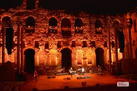

The Acropolis of Athens
The Acropolis of Athens: A timeless symbol of ancient Greece, where history, art, and architecture come together to tell the story of a civilization that shaped the world.
History:
The Acropolis of Athens is an ancient citadel located on a rocky outcrop above the city of Athens, Greece, and contains the remains of several ancient buildings of great architectural and historical significance, the most famous being the Parthenon.
Hagia Sophia remained the world's largest cathedral for nearly a thousand years until the completion of the Seville Cathedral in 1520.
Architecture:
Athens is a city where ancient, Byzantine, neoclassical, and modern architecture coexist harmoniously. Iconic landmarks like the Acropolis, with the Parthenon and Temple of Olympian Zeus, reflect its classical heritage. Byzantine churches, such as Kapnikarea and Daphni Monastery, add a medieval charm. The 19th century brought neoclassical gems like the Academy of Athens and Zappeion Hall, while modern landmarks like the New Acropolis Museum and Stavros Niarchos Foundation Cultural Center showcase contemporary innovation. Historic districts like Plaka and modern neighborhoods like Kolonaki highlight the city’s blend of tradition and progress.
Transformation
Athens has transformed from the cradle of Western civilization to a modern metropolis. In ancient times, it was a hub of democracy, philosophy, and art, marked by landmarks like the Acropolis. Through Byzantine and Ottoman periods, it adapted culturally, adding churches and mosques. After becoming Greece’s capital in the 19th century, Athens embraced neoclassical architecture. Rapid urbanization in the 20th century and modernization for the 2004 Olympics introduced contemporary landmarks, blending its ancient heritage with modern innovation.
Museum Conversion
The Acropolis Museum transitioned in 2009 from a small hilltop site to a modern facility at the foot of the Acropolis. Designed by Bernard Tschumi, it features spacious galleries, glass floors revealing ancient ruins, and panoramic views of the Parthenon, enhancing the preservation and display of Greece’s cultural heritage.
Odeon of Herodes Atticus
The Odeon of Herodes Atticus is a majestic Roman amphitheater on the Acropolis slope, renowned for hosting ancient and modern performances.
History
The Odeon of Herodes Atticus, built in 161 AD by the Roman senator Herodes Atticus, was a tribute to his late wife, Regilla. This stone amphitheater, located on the southern slope of the Acropolis, originally featured a wooden roof and seated up to 5,000 people for musical and theatrical performances. Restored in the 1950s, it remains a key venue for cultural events, including the Athens Festival.
Architecture
The Odeon of Herodes Atticus features a semi-circular Roman design with stone arches, marble seating, and a decorated stage. Originally covered by a cedarwood roof, it blends classical Roman architecture with the Acropolis backdrop.
Layout and Features
he Odeon of Herodes Atticus has a semi-circular layout with a large orchestra area in the center, surrounded by tiered seating for up to 5,000 spectators. It features a grand stone façade with three levels of arches and a stage building (skene) at the rear. The stage was originally adorned with elaborate decorations, and the theater's roof was once made of cedarwood. The structure is built into the natural slope of the Acropolis, offering excellent acoustics for performances.

Cultural Significance
The Odeon of Herodes Atticus holds significant cultural value as a symbol of ancient Greek and Roman cultural fusion. Originally built for musical and theatrical performances, it highlights the importance of the arts in ancient Athens. Today, it serves as a major venue for modern performances, continuing its legacy as a center for cultural events, especially during the Athens Festival.
Panathenaic Stadium
The Panathenaic Stadium, also known as Kallimarmaro, is an ancient marble stadium in Athens, famously hosting the first modern Olympic Games in 1896.
History
The Panathenaic Stadium was originally constructed in the 4th century BCE by the Athenian statesman Lycurgus, and later rebuilt in marble by the Roman emperor Herodes Atticus in the 2nd century CE.
The Panathenaic Stadium was built to host the Panathenaic Games, an ancient athletic festival held in honor of the goddess Athena.
Cultural Significance
The Panathenaic Stadium holds cultural significance as a symbol of ancient Greek athleticism and religious devotion, hosting the Panathenaic Games in honor of Athena. It also represents Greece’s revival of the Olympic spirit, serving as the venue for the first modern Olympic Games in 1896.
Temple of Hephaestus
The Temple of Hephaestus, located in the Ancient Agora of Athens, is a well-preserved Doric temple dedicated to the god of craftsmanship and fire.
History:
The Temple of Hephaestus was built around 450 BCE during Athens' Golden Age, dedicated to Hephaestus, the god of fire and craftsmanship.
It was originally known as the Temple of Theseus, and its construction was funded by the spoils of the Athenian victory in the Persian Wars. Over time, it became one of the best-preserved ancient Greek temples, partly due to its conversion into a Christian church in the 7th century and later a mosque during the Ottoman period.
Architecture
The Temple of Hephaestus is a Doric-style temple, characterized by simple, sturdy columns and a rectangular layout. It features six columns on the front and thirteen on the sides, with a symmetrical design. The temple's frieze and pediments are adorned with detailed sculptures depicting mythological scenes, such as the labors of Heracles. Its proportions are considered exemplary of Doric architecture, and the structure remains remarkably well-preserved due to its historical uses as a church and mosque.
Cultural Heritage
The Temple of Hephaestus is a key symbol of ancient Athens' architectural and religious heritage, showcasing the city's devotion to craftsmanship and the gods. Its preservation offers valuable insight into Greek culture and history.pturing the imagination of travelers and writers from around the world.
Visiting the Temple of Hephaestus
The Temple of Hephaestus is open to visitors daily, offering a glimpse into ancient Greek architecture and religious practices. It's advisable to set aside time to explore the temple and its surroundings, as the site provides a rich historical context. The temple is renowned for its well-preserved Doric structure and intricate sculptures, reflecting the skill of ancient craftsmen. Visitors should also take time to admire the temple's serene atmosphere and appreciate its significance as a symbol of ancient Athens' cultural and religious heritage.
Parthenon
The Parthenon is a renowned ancient Greek temple on the Acropolis of Athens, dedicated to the goddess Athena, symbolizing Athenian prosperity and artistic achievement.
History
The Parthenon, built between 447 and 438 BCE, was dedicated to the goddess Athena and symbolized Athenian power. It later served as a Christian church and a mosque before suffering damage in the 17th century.
The Parthenon was built between 447 and 438 BCE during the leadership of Pericles, dedicated to the goddess Athena.
It was originally a temple, later becoming a Christian church, a mosque, and suffering significant damage in the 17th century.
Architecture
Cultural Significance
The Parthenon holds immense cultural significance as a symbol of ancient Greek democracy, art, and architectural innovation. It represents the height of Athenian civilization and reflects the values of balance, harmony, and devotion to the gods. As one of the most iconic monuments of ancient Greece, the Parthenon continues to inspire admiration and is a key symbol of Western culture, representing ideals of beauty, knowledge, and political freedom.
Visiting Parthenon
The Parthenon is a major tourist attraction, offering stunning views of Athens and insight into ancient Greek civilization. Its historical and architectural significance makes it one of the most visited landmarks in the world.